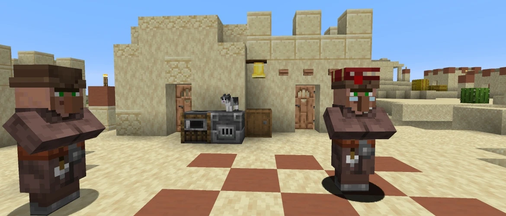

게임 속 NPC
안내자·상점 도우미·동료 등 캐릭터의 역할과 대화 방식을 설계합니다.
마을 NPC, 이동 경로, 반복 작업과 대화를 관리하는 화면 예시입니다.

>agent profile load village-helper
[프로필]마을 도우미 / 작업 우선순위: 운반 → 정리 → 안내
[이동]작업 지점 A → 창고 B / 장애물 경로 판단
[작업]목재 수집 → 인벤토리 확인 → 보관 위치 이동
[NPC]플레이어 질문 → 마을 정보 조회 → 안내 응답
[기억]이전 대화와 방문 위치를 NPC별로 구분
안내자·상점 도우미·동료 등 캐릭터의 역할과 대화 방식을 설계합니다.
수집·운반·정리 같은 작업을 조건과 순서에 따라 수행하도록 구성합니다.
서버 명령어, 역할, 작업 대기열을 한 화면에서 관리하는 도구를 제작합니다.